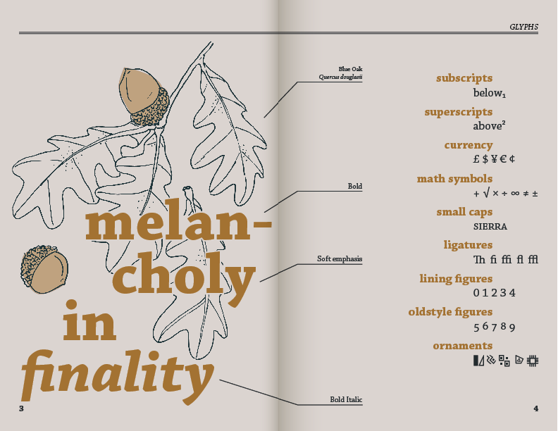
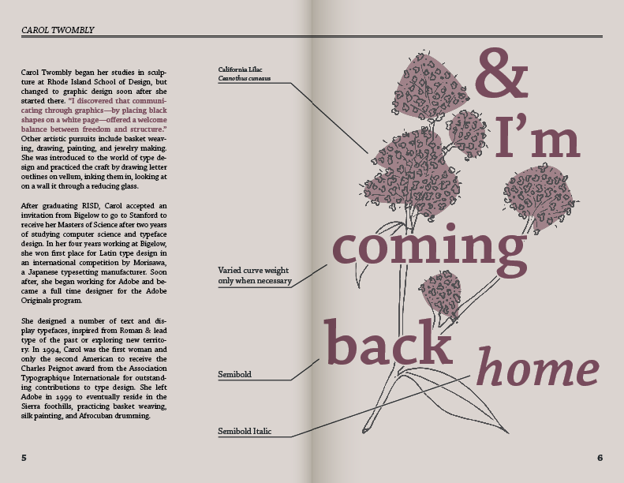
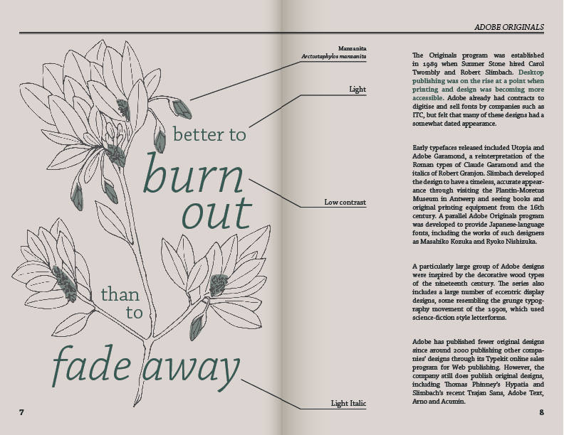
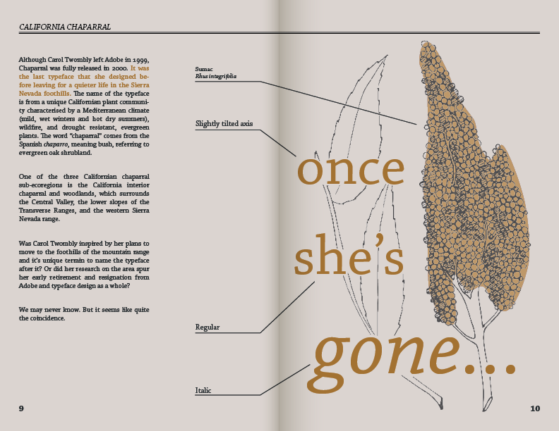

Chaparral Type Specimen
This project was so create a twelve page booklet showcasing a randomly chosen typeface. I chose Chaparral, and in my research I discovered that it was the last typeface Carol Twombly designed before retiring from type design and moving to the Sierra Nevada foothills, an area with a specific drought-resistant plant community referred to as chaparral. I decided to embrace this connection and style my type specimen booklet as a field guide.



